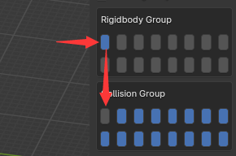

参数及示例
参数提示
开始之前：刚体参数不是实时传递的，因为它会消耗性能。 您需要重新播放才能看到刚体参数更改的结果。
参数调整技巧，以下技巧也适用于其他物理引擎
对于链条上的刚体来说，相当于它们之间有一个弹簧，将它们两个一一连接起来。 您需要调整适当的参数，使其达到您想要的结果。
①首先是保持形状。 刚体链条会因重力的影响而下垂。 如果不想因为重力而下垂，那么将重力调整为0，或者减少质量或者增加连接的刚度（注意参数的安排，因为一个参数的变化会导致其他方面的变化）
②质量与弹簧刚度的关系。 当刚体链条晃动时，它受到弹簧连接力和刚体惯性力的影响。 质量越大，惯性力越大，晃动效果越好； 弹簧刚度越大，弹簧变形所需的力就越大，就越难晃动。 例如，想象一块铁绑在弹簧上，一张纸绑在弹簧上。 哪个抖得比较好？ 需要注意的是，弹簧的刚度越大，回弹力越大。 因此，当大刚度的弹簧晃动时，会围绕初始位置来回晃动。
③弹簧刚度与阻尼的关系。 阻尼是阻止弹簧返回原点的力。 阻尼越大，阻力越大（阻力不会超过弹簧的回弹力）。 它会因弹簧刚度而减慢回弹速度，如果您不希望刚体围绕其初始位置来回摇动，或者如果您希望运动看起来更柔和一些，那么它就是您需要的参数。
④质量与运动的关系。 质量越大，惯性力越大。 如果你想表达物体停留在空中的感觉，与直觉相反，你需要增加质量，因为质量小的刚体更容易被弹簧刚度拉动并快速返回，时间 在空气中停留的时间不长，质量越大的物体惯性力就越大，同样的弹簧刚度拉动它需要的时间也就越多，所以更能体现在空中的感觉。
⑤缩放尺寸很重要。 模拟是根据物理定律进行的。 例如，当给胸骨赋予刚体时，你可能会发现它无法上下晃动。 你可能需要考虑是否缩放太小，导致骨骼太短，质心力臂太短。 在这种情况下你可以尝试放大模型，但这往往很麻烦，那么你可以尝试增加刚体的质量或降低刚度。
一般来说不需要扭转，所以扭转轴方向的角度限制可以设置为0
自碰撞问题
同一根骨链的刚体刚度很大，这可能是因为你没有关闭自碰撞，导致了相邻两个刚体存在碰撞导致的，对于同一根骨链，你应该关闭他的自碰撞
案例
示例视频教程将陆续更新。
毛茸茸的耳朵和尾巴
对于尾部，您需要中等硬度，这样它可以反弹，中等阻尼，这样它看起来更自然。 对于耳朵，可以参考尾部的设置，但可以给予更高的阻尼，以体现柔软的效果。
毛发
对于头发，您需要较低的刚度，因为头发非常柔软，并且需要较高的刚体阻尼（非弹簧阻尼），因为头发很轻并且受到更大的空气阻力。 并降低反弹系数，因为头发柔软且轻，当它与其他物体碰撞时，它在现实世界中不会反弹太多。
布料
对于布料，参考头发的参数，并增加重力或硬度
裙骨小技巧，如果你的裙骨的轴向不正确，可以在编辑模式下选择骨骼，然后“Shift+N -> 游标”（可能不太完美，但比手动编辑要快）
胸部
对于胸部来说，需要稍高的刚度，才能产生一定的摇摆效果，体现弹性。 同时，将位移限制调整为略高于0，可以达到更好的物理效果。
简单的布娃娃系统
Necklace
Necklace Example Download需要注意的是，dynamic刚体不应出现在kenimatic刚体的父骨骼中。 因为在Blender中，子骨骼的变换受到父骨骼的影响，而在PhysX中，kenimatic刚体的移动会影响dynamic刚体，从而导致循环作用，搞乱模拟结果。 如果你仍然想创造这样的效果，那么尾部设置的运动学刚体需要使用“copy transform”骨骼约束，使其位移和旋转脱离父骨骼的影响（注意不勾选connected ，否则位移将被锁定）。或者您可以使用软连接来实现这一点。